Web Server Statistics for raspinaclothing.com
Web Server Statistics for raspinaclothing.com
Program started on Tue, Aug 11 2026 at 5:44 PM.
Analyzed requests from Mon, Jun 01 2026 at 5:10 PM to Tue, Aug 11 2026 at 11:07 AM (70.75 days).
Web Server Statistics for raspinaclothing.comProgram started on Tue, Aug 11 2026 at 5:44 PM.
Analyzed requests from Mon, Jun 01 2026 at 5:10 PM to Tue, Aug 11 2026 at 11:07 AM (70.75 days).
(Go To: Top | General Summary | Monthly Report | Daily Summary | Hourly Summary | Domain Report | Organization Report | Redirected Referrer Report | Failed Referrer Report | Referring Site Report | Browser Report | Browser Summary | Operating System Report | Status Code Report | File Size Report | File Type Report | Directory Report | Request Report)
Figures in parentheses refer to the 7-day period ending Aug 11 2026 at 5:44 PM.
Successful requests: 1,774 (335)
Average successful requests per day: 25 (47)
Successful requests for pages: 248 (77)
Average successful requests for pages per day: 3 (10)
Failed requests: 4,140 (1)
Redirected requests: 7,253 (0)
Distinct files requested: 1,327 (4,247)
Distinct hosts served: 421 (971)
Data transferred: 32.09 megabytes (16.27 megabytes)
Average data transferred per day: 464.44 kilobytes (2.32 megabytes)
(Go To: Top | General Summary | Monthly Report | Daily Summary | Hourly Summary | Domain Report | Organization Report | Redirected Referrer Report | Failed Referrer Report | Referring Site Report | Browser Report | Browser Summary | Operating System Report | Status Code Report | File Size Report | File Type Report | Directory Report | Request Report)
Each unit ( ) represents 3 requests for pages or part thereof.
) represents 3 requests for pages or part thereof.
| month | #reqs | #pages | |
|---|---|---|---|
| Jun 2026 | 1002 | 30 |   |
| Jul 2026 | 379 | 112 |   |
| Aug 2026 | 393 | 106 | |
Busiest month: Jul 2026 (112 requests for pages).
(Go To: Top | General Summary | Monthly Report | Daily Summary | Hourly Summary | Domain Report | Organization Report | Redirected Referrer Report | Failed Referrer Report | Referring Site Report | Browser Report | Browser Summary | Operating System Report | Status Code Report | File Size Report | File Type Report | Directory Report | Request Report)
Each unit () represents 2 requests for pages or part thereof.
| day | #reqs | #pages | |
|---|---|---|---|
| Sun | 216 | 27 | |
| Mon | 238 | 40 |  |
| Tue | 389 | 39 | |
| Wed | 129 | 25 | |
| Thu | 360 | 49 | |
| Fri | 354 | 44 | |
| Sat | 88 | 24 | |
(Go To: Top | General Summary | Monthly Report | Daily Summary | Hourly Summary | Domain Report | Organization Report | Redirected Referrer Report | Failed Referrer Report | Referring Site Report | Browser Report | Browser Summary | Operating System Report | Status Code Report | File Size Report | File Type Report | Directory Report | Request Report)
Each unit () represents 1 request for a page.
| hour | #reqs | #pages | |
|---|---|---|---|
| 0 | 58 | 16 | |
| 1 | 110 | 9 | |
| 2 | 111 | 18 | |
| 3 | 41 | 5 | |
| 4 | 50 | 5 | |
| 5 | 79 | 10 | |
| 6 | 32 | 8 | |
| 7 | 76 | 12 | |
| 8 | 186 | 16 | |
| 9 | 17 | 4 | |
| 10 | 48 | 8 | |
| 11 | 28 | 10 | |
| 12 | 32 | 10 | |
| 13 | 15 | 7 | |
| 14 | 84 | 14 | |
| 15 | 120 | 15 | |
| 16 | 72 | 11 | |
| 17 | 38 | 5 | |
| 18 | 128 | 11 | |
| 19 | 146 | 14 | |
| 20 | 60 | 13 | |
| 21 | 62 | 9 | |
| 22 | 70 | 8 | |
| 23 | 111 | 10 | |
(Go To: Top | General Summary | Monthly Report | Daily Summary | Hourly Summary | Domain Report | Organization Report | Redirected Referrer Report | Failed Referrer Report | Referring Site Report | Browser Report | Browser Summary | Operating System Report | Status Code Report | File Size Report | File Type Report | Directory Report | Request Report)
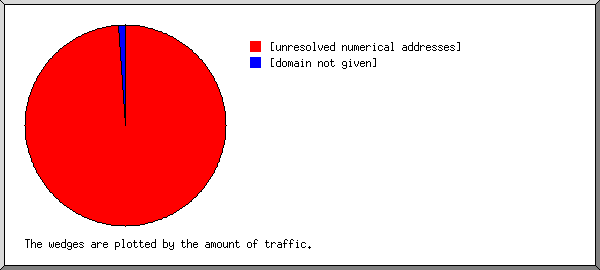
Listing domains, sorted by the amount of traffic.
| #reqs | %bytes | domain |
|---|---|---|
| 1706 | 98.96% | [unresolved numerical addresses] |
| 68 | 1.04% | [domain not given] |
(Go To: Top | General Summary | Monthly Report | Daily Summary | Hourly Summary | Domain Report | Organization Report | Redirected Referrer Report | Failed Referrer Report | Referring Site Report | Browser Report | Browser Summary | Operating System Report | Status Code Report | File Size Report | File Type Report | Directory Report | Request Report)
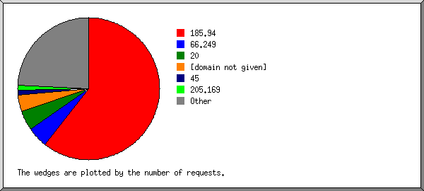
Listing the top 20 organizations by the number of requests, sorted by the number of requests.
| #reqs | %bytes | organization |
|---|---|---|
| 1073 | 185.94 | |
| 85 | 44.57% | 66.249 |
| 78 | 0.99% | 20 |
| 68 | 1.04% | [domain not given] |
| 20 | 0.11% | 45 |
| 19 | 1.36% | 205.169 |
| 14 | 0.23% | 171.25 |
| 12 | 0.37% | 146.70 |
| 12 | 0.24% | 43 |
| 11 | 0.71% | 106 |
| 11 | 0.21% | 119 |
| 11 | 0.02% | 120 |
| 10 | 21.16% | 47 |
| 10 | 0.04% | 52 |
| 9 | 0.17% | 1 |
| 9 | 0.27% | 17 |
| 9 | 0.15% | 49 |
| 9 | 0.14% | 93 |
| 8 | 0.29% | 40 |
| 8 | 0.35% | 59 |
| 288 | 27.57% | [not listed: 158 organizations] |
(Go To: Top | General Summary | Monthly Report | Daily Summary | Hourly Summary | Domain Report | Organization Report | Redirected Referrer Report | Failed Referrer Report | Referring Site Report | Browser Report | Browser Summary | Operating System Report | Status Code Report | File Size Report | File Type Report | Directory Report | Request Report)
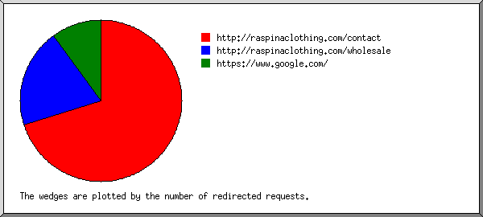
Listing referring URLs, sorted by the number of redirected requests.
| #reqs | URL |
|---|---|
| 7 | http://raspinaclothing.com/contact |
| 2 | http://raspinaclothing.com/wholesale |
| 1 | https://www.google.com/ |
(Go To: Top | General Summary | Monthly Report | Daily Summary | Hourly Summary | Domain Report | Organization Report | Redirected Referrer Report | Failed Referrer Report | Referring Site Report | Browser Report | Browser Summary | Operating System Report | Status Code Report | File Size Report | File Type Report | Directory Report | Request Report)
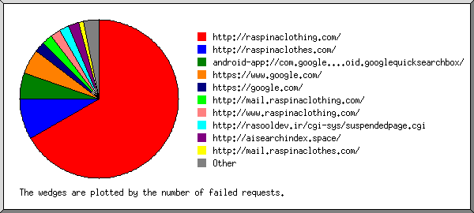
Listing referring URLs, sorted by the number of failed requests.
(Go To: Top | General Summary | Monthly Report | Daily Summary | Hourly Summary | Domain Report | Organization Report | Redirected Referrer Report | Failed Referrer Report | Referring Site Report | Browser Report | Browser Summary | Operating System Report | Status Code Report | File Size Report | File Type Report | Directory Report | Request Report)
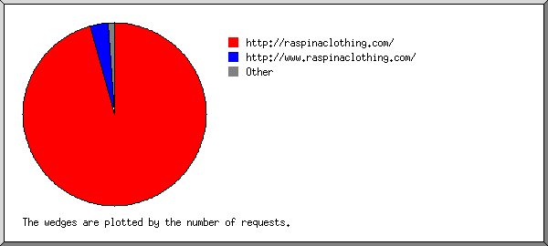
Listing referring sites, sorted by the number of requests.
| #reqs | site |
|---|---|
| 267 | http://raspinaclothing.com/ |
| 9 | http://www.raspinaclothing.com/ |
| 2 | http://mail.raspinaclothing.com/ |
| 1 | https://www.google.com/ |
(Go To: Top | General Summary | Monthly Report | Daily Summary | Hourly Summary | Domain Report | Organization Report | Redirected Referrer Report | Failed Referrer Report | Referring Site Report | Browser Report | Browser Summary | Operating System Report | Status Code Report | File Size Report | File Type Report | Directory Report | Request Report)
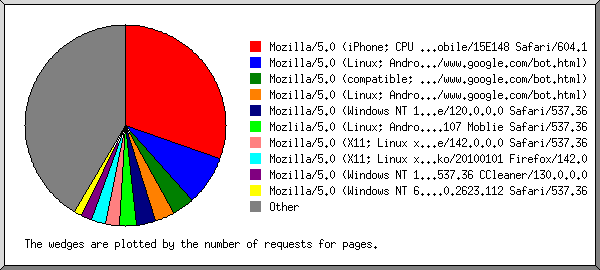
Listing the top 40 browsers by the number of requests for pages, sorted by the number of requests for pages.
| #reqs | #pages | browser |
|---|---|---|
| 80 | 68 | Mozilla/5.0 (iPhone; CPU iPhone OS 13_2_3 like Mac OS X) AppleWebKit/605.1.15 (KHTML, like Gecko) Version/13.0.3 Mobile/15E148 Safari/604.1 |
| 31 | 18 | Mozilla/5.0 (Linux; Android 6.0.1; Nexus 5X Build/MMB29P) AppleWebKit/537.36 (KHTML, like Gecko) Chrome/150.0.7871.186 Mobile Safari/537.36 (compatible; Googlebot/2.1; +http://www.google.com/bot.html) |
| 24 | 8 | Mozilla/5.0 (compatible; Googlebot/2.1; +http://www.google.com/bot.html) |
| 16 | 7 | Mozilla/5.0 (Linux; Android 6.0.1; Nexus 5X Build/MMB29P) AppleWebKit/537.36 (KHTML, like Gecko) Chrome/150.0.7871.128 Mobile Safari/537.36 (compatible; Googlebot/2.1; +http://www.google.com/bot.html) |
| 7 | 7 | Mozilla/5.0 (Windows NT 10.0; Win64; x64) AppleWebKit/537.36 (KHTML, like Gecko) Chrome/120.0.0.0 Safari/537.36 |
| 6 | 6 | Mozlila/5.0 (Linux; Android 7.0; SM-G892A Bulid/NRD90M; wv) AppleWebKit/537.36 (KHTML, like Gecko) Version/4.0 Chrome/60.0.3112.107 Moblie Safari/537.36 |
| 10 | 5 | Mozilla/5.0 (X11; Linux x86_64) AppleWebKit/537.36 (KHTML, like Gecko) Chrome/142.0.0.0 Safari/537.36 |
| 9 | 5 | Mozilla/5.0 (X11; Linux x86_64; rv:142.0) Gecko/20100101 Firefox/142.0 |
| 12 | 4 | Mozilla/5.0 (Windows NT 10.0; Win64; x64) AppleWebKit/537.36 (KHTML, like Gecko) Chrome/130.0.0.0 Safari/537.36 CCleaner/130.0.0.0 |
| 9 | 3 | Mozilla/5.0 (Windows NT 6.1) AppleWebKit/537.36 (KHTML, like Gecko) Chrome/49.0.2623.112 Safari/537.36 |
| 3 | 3 | Mozilla/5.0 (Linux; Android 6.0.1; Nexus 5X Build/MMB29P) AppleWebKit/537.36 (KHTML, like Gecko) Chrome/99.0.4844.84 Mobile Safari/537.36 (compatible; Googlebot/2.1; +http://www.google.com/bot.html) |
| 3 | 3 | Mozilla/5.0 (Windows NT 10.0; Win64; x64) AppleWebKit/537.36 (KHTML, like Gecko) Chrome/89.0.4389.114 Safari/537.36 |
| 3 | 3 | Mozilla/5.0 (compatible; DomainScores/2.1; +https://www.domainscores.net/headers) |
| 3 | 3 | Mozilla/5.0 (Macintosh; Intel Mac OS X 10_15_7) AppleWebKit/537.36 (KHTML, like Gecko) Chrome/92.0.4515.107 Safari/537.36 (compatible; +https://developers.cloudflare.com/security-center/) |
| 15 | 3 | Mozilla/5.0 (Windows NT 10.0; Win64; x64) AppleWebKit/537.36 (KHTML, like Gecko) Chrome/125.0.0.0 Safari/537.36 |
| 3 | 3 | Mozilla/5.0 (Windows NT 10.0; Win64; x64) AppleWebKit/537.36 (KHTML, like Gecko) Chrome/78.0.3904.108 Safari/537.36 |
| 2 | 2 | Mozilla/5.0 (Windows NT 10.0; Win64; x64) AppleWebKit/537.36 (KHTML, like Gecko) Chrome/64.0.3282.186 Safari/537.36 |
| 3 | 2 | Mozilla/5.0 (Macintosh; Intel Mac OS X 10_15_7) AppleWebKit/605.1.15 (KHTML, like Gecko) Version/17.3.1 Safari/605.1.1 |
| 2 | 2 | Mozilla/5.0 (Windows NT 10.0; Win64; x64; rv:123.0) Gecko/20100101 Firefox/123 |
| 9 | 2 | Mozilla/5.0 (Macintosh; Intel Mac OS X 10_15_7) AppleWebKit/605.1.15 (KHTML, like Gecko) Version/17.4 Safari/605.1.15 (Applebot/0.1; +http://www.apple.com/go/applebot) |
| 2 | 2 | Go-http-client/1.1 |
| 2 | 2 | 2ip bot/1.1 (+https://2ip.io/bot/) |
| 2 | 2 | Mozilla/5.0 (Windows NT 10.0; Win64; x64) AppleWebKit/537.36 (KHTML, like Gecko) Chrome/130.0.0.0 Safari/537.36 |
| 1 | 1 | Mozilla/5.0 (X11; Linux x86_64) AppleWebKit/537.36 (KHTML, like Gecko) Chrome/105.0.0.0 Safari/537.36 |
| 4 | 1 | Mozilla/5.0 (Windows NT 10.0; Win64; x64) AppleWebKit/537.36 (KHTML, like Gecko) Chrome/99.0.4844.51 Safari/537.36 |
| 1 | 1 | Mozilla/5.0 (Windows NT 10.0; Win64; x64) AppleWebKit/537.36 (KHTML, like Gecko) Chrome/122.0.0.0 Safari/537.36 Agency/93.8.2357.5 |
| 2 | 1 | Mozilla/5.0 (Windows NT 6.1; Win64; x64) AppleWebKit/537.36 (KHTML, like Gecko) Chrome/79.0.3945.130 Safari/537.36 |
| 3 | 1 | Mozilla/5.0 (Windows NT 10.0; Win64; x64) AppleWebKit/537.36 (KHTML, like Gecko) Chrome/131.0.0.0 Safari/537.36 |
| 1 | 1 | Mozilla/5.0 (Macintosh; Intel Mac OS X 10_15_7) AppleWebKit/605.1.15 (KHTML, like Gecko) Version/16.6 Safari/605.1.15 |
| 1 | 1 | Mozilla/5.0 (Windows NT 6.1; Win64; x64; rv:109.0) Gecko/20100101 Firefox/115 |
| 3 | 1 | Mozilla/5.0 |
| 1 | 1 | Mozilla/5.0 (Windows NT 10.0; Win64; x64) AppleWebKit/537.36 (KHTML, like Gecko) Chrome/135.0.0.0 Safari/537.36 Edg/135.0.0.0 |
| 1 | 1 | Mozilla/5.0 (Windows NT 10.0; Win64; x64) AppleWebKit/537.36 (KHTML, like Gecko) Chrome/149.0.0.0 Safari/537.36 |
| 1 | 1 | Mozilla/5.0 (Windows NT 10.0; WOW64) AppleWebKit/537.36 (KHTML, like Gecko) Chrome/109.0.0.0 Safari/537.36 |
| 1 | 1 | Mozilla/5.0 (Windows NT 10.0; Win64; x64) AppleWebKit/537.36 (KHTML, like Gecko) Chrome/79.0.3945.130 Safari/537.36 |
| 1 | 1 | Mozilla/5.0 (iPhone; CPU iPhone OS 17_3_1 like Mac OS X) AppleWebKit/605.1.15 (KHTML, like Gecko) Version/17.3.1 Mobile/15E148 Safari/604 |
| 1 | 1 | Mozilla/5.0 (Macintosh; Intel Mac OS X 10_15_6) AppleWebKit/537.36 (KHTML, like Gecko) Chrome/84.0.4147.105 Safari/537.36 |
| 1 | 1 | Mozilla/5.0 (X11; Linux x86_64) AppleWebKit/537.36 (KHTML, like Gecko) Chrome/126.0.0.0 Safari/537.36 |
| 2 | 1 | Mozilla/5.0 (X11; CrOS x86_64 14541.0.0) AppleWebKit/537.36 (KHTML, like Gecko) Chrome/121.0.0.0 Safari/537.3 |
| 1 | 1 | Mozilla/5.0 (Windows NT 6.3; WOW64) AppleWebKit/537.36 (KHTML, like Gecko) Chrome/50.0.2661.102 Safari/537.36 |
| 1396 | 44 | [not listed: 96 browsers] |
(Go To: Top | General Summary | Monthly Report | Daily Summary | Hourly Summary | Domain Report | Organization Report | Redirected Referrer Report | Failed Referrer Report | Referring Site Report | Browser Report | Browser Summary | Operating System Report | Status Code Report | File Size Report | File Type Report | Directory Report | Request Report)
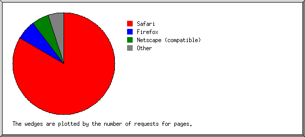
Listing browsers with at least 1 request for a page, sorted by the number of requests for pages.
| # | #reqs | #pages | browser |
|---|---|---|---|
| 1 | 514 | 187 | Safari |
| 417 | 110 | Safari/537 | |
| 82 | 70 | Safari/604 | |
| 13 | 5 | Safari/605 | |
| 1 | 1 | Safari/603 | |
| 1 | 1 | Safari/601 | |
| 2 | 23 | 14 | Firefox |
| 9 | 5 | Firefox/142 | |
| 2 | 2 | Firefox/123 | |
| 2 | 2 | Firefox/115 | |
| 1 | 1 | Firefox/24 | |
| 1 | 1 | Firefox/76 | |
| 1 | 1 | Firefox/3 | |
| 1 | 1 | Firefox/133 | |
| 2 | 1 | Firefox/134 | |
| 3 | 44 | 12 | Netscape (compatible) |
| 4 | 2 | 2 | Python |
| 2 | 2 | Python/3 | |
| 5 | 2 | 2 | Go-http-client |
| 2 | 2 | Go-http-client/1 | |
| 6 | 2 | 2 | 2ip bot |
| 2 | 2 | 2ip bot/1 | |
| 7 | 3 | 1 | python-requests |
| 3 | 1 | python-requests/2 | |
| 8 | 2 | 1 | DuckDuckBot |
| 2 | 1 | DuckDuckBot/1 | |
| 9 | 1 | 1 | wp2shell-rce |
| 1 | 1 | wp2shell-rce/1 | |
| 10 | 3 | 1 | Mozilla |
| 11 | 1 | 1 | CmsScaner |
| 1 | 1 | CmsScaner/net8 | |
| 1081 | 0 | [not listed: 5 browsers] |
(Go To: Top | General Summary | Monthly Report | Daily Summary | Hourly Summary | Domain Report | Organization Report | Redirected Referrer Report | Failed Referrer Report | Referring Site Report | Browser Report | Browser Summary | Operating System Report | Status Code Report | File Size Report | File Type Report | Directory Report | Request Report)
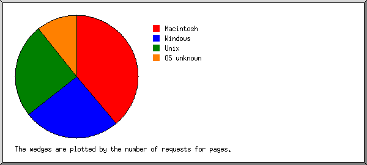
Listing operating systems, sorted by the number of requests for pages.
| # | #reqs | #pages | OS |
|---|---|---|---|
| 1 | 152 | 87 | Macintosh |
| 2 | 282 | 57 | Windows |
| 250 | 49 | Windows NT | |
| 32 | 8 | Unknown Windows | |
| 3 | 91 | 56 | Unix |
| 88 | 54 | Linux | |
| 2 | 1 | Other Unix | |
| 1 | 1 | BSD | |
| 4 | 1138 | 24 | OS unknown |
| 5 | 15 | 0 | Known robots |
(Go To: Top | General Summary | Monthly Report | Daily Summary | Hourly Summary | Domain Report | Organization Report | Redirected Referrer Report | Failed Referrer Report | Referring Site Report | Browser Report | Browser Summary | Operating System Report | Status Code Report | File Size Report | File Type Report | Directory Report | Request Report)
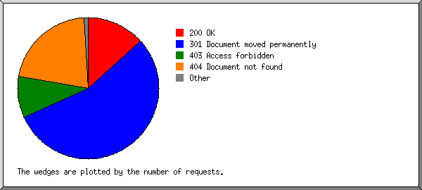
Listing status codes, sorted numerically.
| #reqs | status code |
|---|---|
| 1767 | 200 OK |
| 5 | 206 Partial content |
| 7202 | 301 Document moved permanently |
| 41 | 302 Document found elsewhere |
| 10 | 303 See other document |
| 2 | 304 Not modified since last retrieval |
| 1264 | 403 Access forbidden |
| 2819 | 404 Document not found |
| 26 | 405 Method not allowed |
| 1 | 409 Request conflicts with state of resource |
| 30 | 500 Internal server error |
(Go To: Top | General Summary | Monthly Report | Daily Summary | Hourly Summary | Domain Report | Organization Report | Redirected Referrer Report | Failed Referrer Report | Referring Site Report | Browser Report | Browser Summary | Operating System Report | Status Code Report | File Size Report | File Type Report | Directory Report | Request Report)
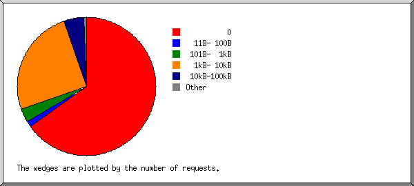
| size | #reqs | %bytes |
|---|---|---|
| 0 | 1153 | |
| 1B- 10B | 5 | |
| 11B- 100B | 24 | 0.01% |
| 101B- 1kB | 57 | 0.03% |
| 1kB- 10kB | 447 | 7.77% |
| 10kB-100kB | 84 | 7.67% |
| 100kB- 1MB | 0 | |
| 1MB- 10MB | 4 | 84.53% |
(Go To: Top | General Summary | Monthly Report | Daily Summary | Hourly Summary | Domain Report | Organization Report | Redirected Referrer Report | Failed Referrer Report | Referring Site Report | Browser Report | Browser Summary | Operating System Report | Status Code Report | File Size Report | File Type Report | Directory Report | Request Report)
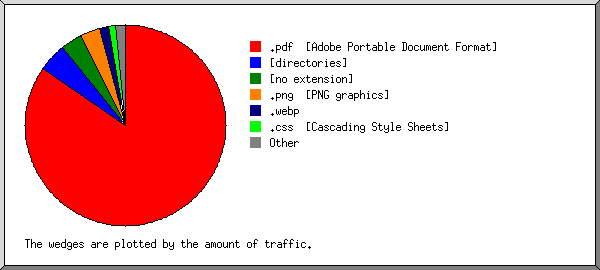
Listing extensions with at least 0.1% of the traffic, sorted by the amount of traffic.
| #reqs | %bytes | extension |
|---|---|---|
| 4 | 84.53% | .pdf [Adobe Portable Document Format] |
| 245 | 4.67% | [directories] |
| 245 | 3.48% | [no extension] |
| 22 | 3.19% | .png [PNG graphics] |
| 21 | 1.48% | .webp |
| 17 | 1.20% | .css [Cascading Style Sheets] |
| 19 | 0.71% | .js [JavaScript code] |
| 1140 | 0.61% | .php [PHP] |
| 61 | 0.13% | [not listed: 4 extensions] |
(Go To: Top | General Summary | Monthly Report | Daily Summary | Hourly Summary | Domain Report | Organization Report | Redirected Referrer Report | Failed Referrer Report | Referring Site Report | Browser Report | Browser Summary | Operating System Report | Status Code Report | File Size Report | File Type Report | Directory Report | Request Report)
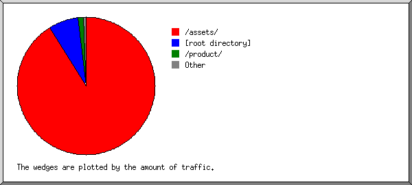
Listing directories with at least 0.01% of the traffic, sorted by the amount of traffic.
| #reqs | %bytes | directory |
|---|---|---|
| 84 | 91.15% | /assets/ |
| 428 | 7.00% | [root directory] |
| 79 | 1.28% | /product/ |
| 20 | 0.40% | /collection/ |
| 10 | 0.15% | http:// |
| 1153 | 0.02% | [not listed: 6 directories] |
(Go To: Top | General Summary | Monthly Report | Daily Summary | Hourly Summary | Domain Report | Organization Report | Redirected Referrer Report | Failed Referrer Report | Referring Site Report | Browser Report | Browser Summary | Operating System Report | Status Code Report | File Size Report | File Type Report | Directory Report | Request Report)
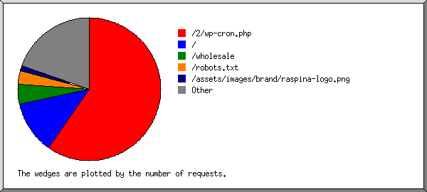
Listing files with at least 20 requests, sorted by the number of requests.
| #reqs | %bytes | last time | file |
|---|---|---|---|
| 1055 | Jul/19/26 12:43 AM | /2/wp-cron.php | |
| 213 | 4.67% | Aug/11/26 8:39 AM | / |
| 12 | 0.19% | Aug/10/26 7:22 PM | /?135.148.195.1 |
| 82 | 1.08% | Aug/11/26 8:42 AM | /wholesale |
| 53 | 0.02% | Aug/11/26 11:07 AM | /robots.txt |
| 22 | 3.19% | Aug/10/26 7:22 PM | /assets/images/brand/raspina-logo.png |
| 349 | 91.04% | Aug/11/26 8:51 AM | [not listed: 174 files] |